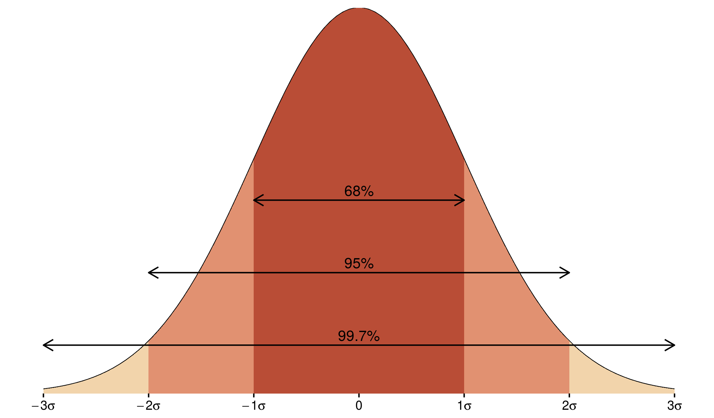
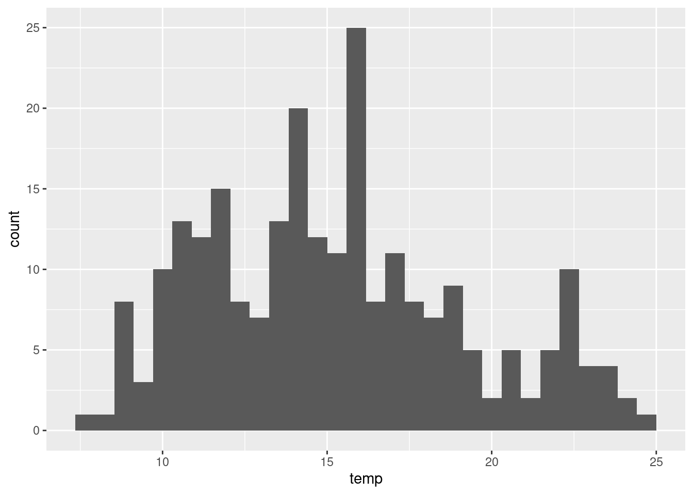
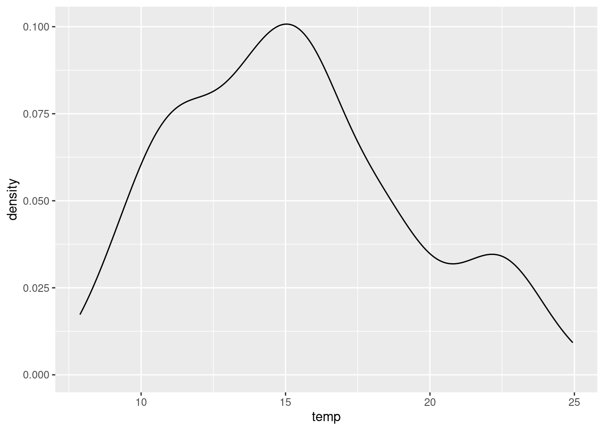
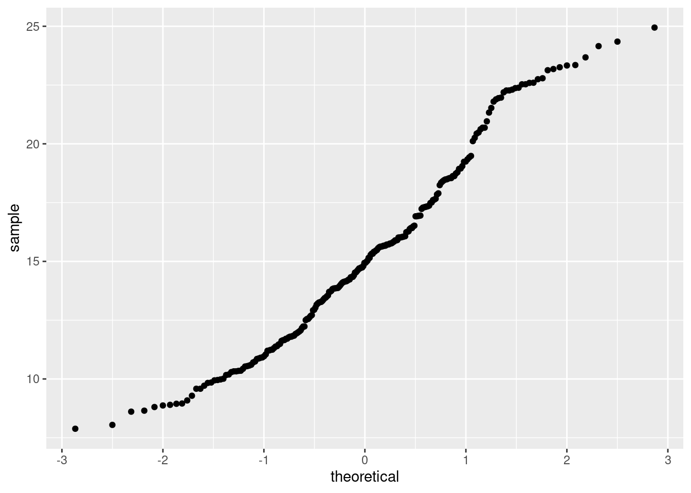
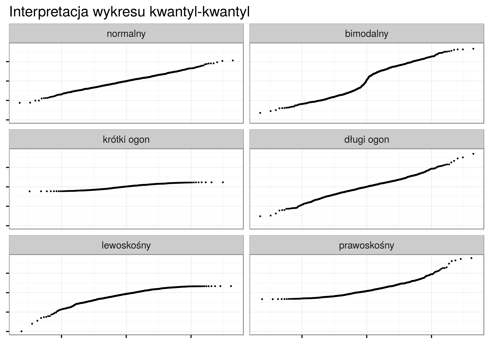
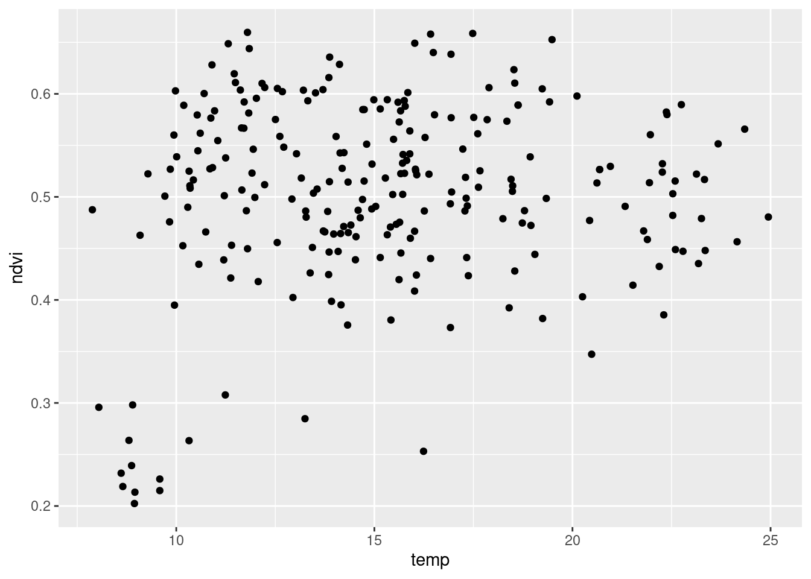
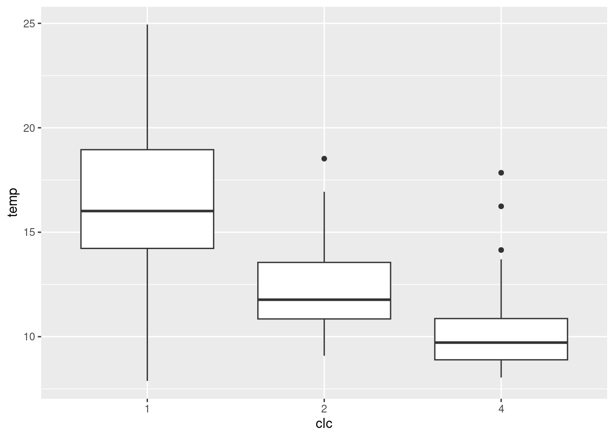
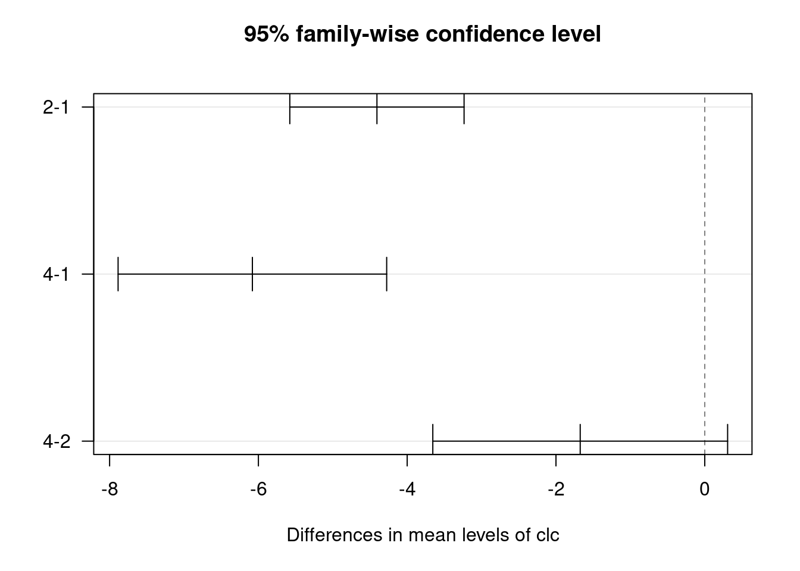
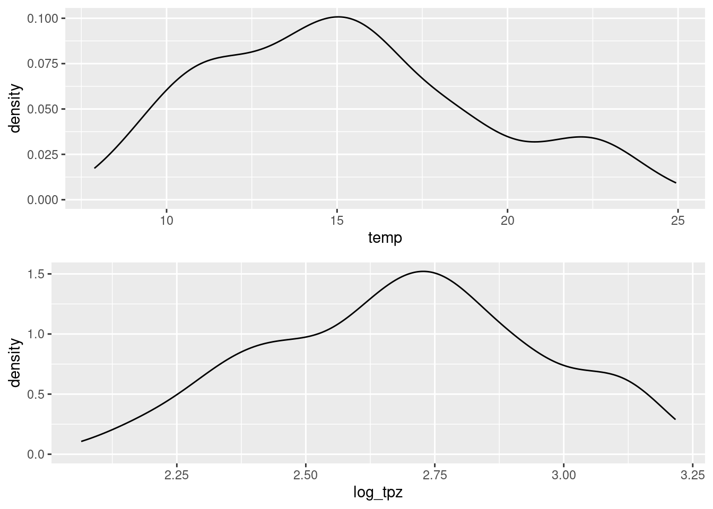
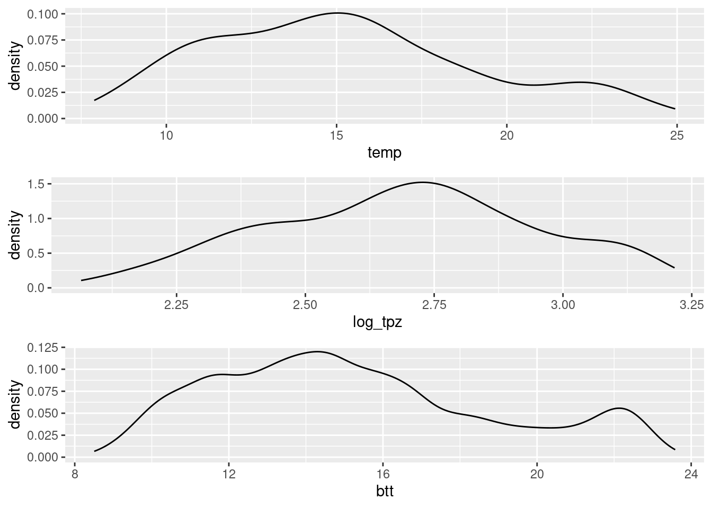

3 Eksploracyjna analiza danych nieprzestrzennych
Odtworzenie obliczeń z tego rozdziału wymaga załączenia poniższych pakietów oraz wczytania poniższych danych:
3.1 Cele eksploracyjnej analizy danych
Zazwyczaj przed przystąpieniem do analiz (geo-)statystycznych koniecznie jest wykonanie eksploracyjnej analizy danych nieprzestrzennych. Jej ogólne cele obejmują:
- Stworzenie ogólnej charakterystyki danych oraz badanego zjawiska.
- Określenie przestrzennego/czasowego typu próbkowania.
- Uzyskanie informacji o relacji pomiędzy lokalizacją obserwacji a czynnikami wpływającymi na zmienność przestrzenną badanych cech.
3.2 Dane
3.2.1 Struktura danych
Nie istnieje jedyna, optymalna ścieżka eksploracji danych.
Proces ten różni się w zależności od posiadanego zbioru danych, jak i od postawionego pytania.
Warto jednak, aby jednym z pierwszych kroków było przyjrzenie się danym wejściowym.
Pozwala na to, między innymi, funkcja str().
Przykładowo, dla obiektu klasy sf wyświetla ona szereg ważnych informacji.
str(punkty)## Classes 'sf' and 'data.frame': 242 obs. of 6 variables:
## $ srtm : num 176 150 187 260 160 ...
## $ clc : int 1 1 1 1 2 2 1 1 2 1 ...
## $ temp : num 13.85 15.48 14.32 15.91 9.94 ...
## $ ndvi : num 0.616 0.556 0.376 0.46 0.56 ...
## $ savi : num 0.419 0.379 0.239 0.309 0.345 ...
## $ geometry:sfc_POINT of length 242; first list element: 'XY' num 750298 716732
## - attr(*, "sf_column")= chr "geometry"
## - attr(*, "agr")= Factor w/ 3 levels "constant","aggregate",..: NA NA NA NA NA
## ..- attr(*, "names")= chr [1:5] "srtm" "clc" "temp" "ndvi" ...
## - attr(*, "na.action")= 'omit' Named int [1:6] 3 90 110 115 140 197
## ..- attr(*, "names")= chr [1:6] "3" "90" "110" "115" ...Każdą ze zmiennych można obejrzeć oddzielnie, poprzez połączenie nazwy obiekty, znaku $, oraz nazwy elementu.
Przykładowo punkty$temp pozwala na obejrzenie wartości wybranej zmiennej z tabeli atrybutów.
str(punkty$temp)## num [1:242] 13.85 15.48 14.32 15.91 9.94 ...3.3 Statystyki opisowe
3.3.1 Podsumowanie numeryczne
Podstawową funkcją w R służącą wyliczaniu podstawowych statystyk jest summary().
Dla zmiennych numerycznych wyświetla ona wartość minimalną, pierwszy kwartyl, medianę, średnią, trzeci kwartyl, oraz wartość maksymalną.
summary(punkty)## srtm clc temp ndvi
## Min. :146.5 Min. :1.000 Min. : 7.883 Min. :0.2024
## 1st Qu.:190.4 1st Qu.:1.000 1st Qu.:11.953 1st Qu.:0.4629
## Median :217.4 Median :1.000 Median :14.937 Median :0.5141
## Mean :214.3 Mean :1.483 Mean :15.223 Mean :0.5034
## 3rd Qu.:238.4 3rd Qu.:2.000 3rd Qu.:17.584 3rd Qu.:0.5712
## Max. :278.4 Max. :4.000 Max. :24.945 Max. :0.6597
## savi geometry
## Min. :0.0824 POINT :242
## 1st Qu.:0.2923 epsg:2180 : 0
## Median :0.3253 +proj=tmer...: 0
## Mean :0.3170
## 3rd Qu.:0.3591
## Max. :0.44043.3.2 Średnia i mediana
Do określenia wartości przeciętnej zmiennych najczęściej stosuje się medianę i średnią.
median(punkty$temp, na.rm = TRUE)## [1] 14.93736
mean(punkty$temp, na.rm = TRUE)## [1] 15.22251W wypadku symetrycznego rozkładu te dwie cechy są równe. Średnia jest bardziej wrażliwa na wartości odstające. Mediana jest lepszą miarą środka danych, jeżeli są one skośne.
Po co używać średniej?
- Bardziej przydatna w przypadku małych zbiorów danych
- Gdy rozkład danych jest symetryczny
- (Jednak) często warto podawać obie miary
3.3.3 Minimum i maksimum
Minimalna i maksymalna wartość zmiennej służy do określenia ekstremów w zbiorze danych, jak i sprawdzenia zakresu wartości.
min(punkty$temp, na.rm = TRUE)## [1] 7.882644
max(punkty$temp, na.rm = TRUE)## [1] 24.944513.3.4 Odchylenie standardowe
Dodatkowo, często używaną statystyką jest odchylenie standardowe. Wartość ta określa w jak mocno wartości zmiennej odstają od średniej. Dla rozkładu normalnego ta wartość ma znane własności (rycina 3.1):
- 68% obserwacji mieści się w granicach jednego odchylenia standardowego od średniej
- 95% obserwacji mieści się w granicach dwóch odchyleń standardowych od średniej
- 99,7% obserwacji mieści się w granicach trzech odchyleń standardowych od średniej

Rycina 3.1: Rozrzut wartości w rozkładzie normalnym w zależności od odchylenia standardowego.
sd(punkty$temp, na.rm = TRUE)## [1] 3.9549223.4 Wykresy
3.4.1 Histogram
Histogram należy do typów wykresów najczęściej używanych w eksploracyjnej analizie danych (rycina 3.2).
ggplot(punkty, aes(temp)) + geom_histogram()
Rycina 3.2: Histogram reprezentujący wartości zmiennej temp z obiektu punkty.
Jest on graficzną reprezentacją rozkładu danych. Wartości danych są łączone w przedziały (na osi poziomej) a na osi pionowej jest ukazana liczba punktów (obserwacji) w każdym przedziale. Co ważne, różny dobór przedziałów może dawać inną informację - w pakiecie ggplot2 domyślnie przedział jest ustalany poprzez podzielenie zakresu wartości przez 30.
3.4.2 Estymator jądrowy gęstości
Podobną funkcję do histogramu spełnia estymator jądrowy gęstości (ang. kernel density estimation). Przypomina on wygładzony wykres histogramu i również służy graficznej reprezentacji rozkładu danych (rycina 3.3).
ggplot(punkty, aes(temp)) + geom_density()
Rycina 3.3: Rozkład wartości zmiennej temp z obiektu punkty.
3.4.3 Wykres kwantyl-kwantyl
Wykres kwantyl-kwantyl (ang.quantile-quantile) ułatwia interpretację rozkładu danych (rycina 3.4).

Rycina 3.4: Wykres kwantyl-kwantyl wartości zmiennej temp z obiektu punkty.
Na poniższej rycinie można zobaczyć przykłady najczęściej spotykanych cech rozkładu danych w wykresach kwantyl-kwantyl (rycina 3.5).

Rycina 3.5: Interpretacja rozkładu danych w zależności od wyglądu wykresu kwantyl-kwantyl.
3.4.4 Dystrybuanta (CDF)
Dystrybuanta (ang. cumulative distribution function - CDF) wyświetla prawdopodobieństwo, że wartość zmiennej przewidywanej jest mniejsza lub równa określonej wartości (rycina 3.6).

Rycina 3.6: Dystrybuanta zmiennej temp z obiektu punkty.
3.5 Porównanie zmiennych
Wybór odpowiedniej metody porównania zmiennych zależy od szeregu cech, między innymi liczby zmiennych, ich typu, rozkładu wartości, etc.
3.5.1 Kowariancja
Kowariancja jest nieunormowaną miarą zależności liniowej pomiędzy dwiema zmiennymi.
Kowariancja dwóch zmiennych \(x\) i \(y\) pokazuje jak dwie zmienne są ze sobą liniowo powiązane.
Dodatnia kowariancja wskazuje na pozytywną relację liniową pomiędzy zmiennymi, podczas gdy ujemna kowariancja świadczy o odwrotnej sytuacji.
Jeżeli zmienne nie są ze sobą liniowo powiązane, wartość kowariancji jest bliska zeru; inaczej mówiąc, kowariancja stanowi miarę wspólnej zmienności dwóch zmiennych.
Wielkość samej kowariancji uzależniona jest od przyjętej skali zmiennej (jednostki).
Inne wyniki uzyskamy (przy tej samej zależności pomiędzy parą zmiennych), gdy będziemy analizować wyniki np. wysokości terenu w metrach i temperatury w stopniach Celsjusza a inne dla wysokości terenu w metrach i temperatury w stopniach Fahrenheita.
Do wyliczania kowariancji w R służy funkcja cov().
3.5.2 Współczynnik korelacji
Współczynnik korelacji to unormowana miara zależności pomiędzy dwiema zmiennymi, przyjmująca wartości od -1 do 1.
Ten współczynnik jest uzyskiwany poprzez podzielenie wartości kowariancji przez odchylenie standardowe wyników.
Z racji unormowania nie jest ona uzależniona od jednostki.
Korelację można wyliczyć dzięki funkcji cor() (rycina 3.8).
Działa ona zarówno w przypadku dwóch zmiennych numerycznych, jak i całego obiektu zawierającego zmienne numeryczne.
Za pomocą argumentu method można również wybrać jedną z trzech dostępnych miar korelacji: "pearson" przeznaczoną dla zmiennych o rozkładzie normalnym oraz "spearman" i "kendall" używaną dla zmiennych o rozkładzie różnym od normalnego.
cor(punkty$temp, punkty$ndvi, method = "spearman")## [1] 0.04499375
ggplot(punkty, aes(temp, ndvi)) + geom_point()
Rycina 3.8: Wykres rozrzutu reprezentujący relację pomiędzy zmienną temp i ndvi z obiektu punkty.
Dodatkowo funkcja cor.test() służy do testowania istotności korelacji.
cor.test(punkty$temp, punkty$ndvi, method = "spearman")##
## Spearman's rank correlation rho
##
## data: punkty$temp and punkty$ndvi
## S = 2255764, p-value = 0.486
## alternative hypothesis: true rho is not equal to 0
## sample estimates:
## rho
## 0.044993753.5.3 Wykres pudełkowy
Wykres pudełkowy obrazuje pięć podstawowych statystyk opisowych oraz wartości odstające (rycina 3.9). Pudełko to zakres międzykwartylowy (IQR), a linie oznaczają najbardziej ekstremalne wartości, ale nie odstające. Górna z nich to 1,5*IQR ponad krawędź pudełka, dolna to 1,5*IQR poniżej wartości dolnej krawędzi pudełka. Linia środkowa to mediana.
punkty$clc = as.factor(punkty$clc)
ggplot(punkty, aes(x = clc, y = temp)) + geom_boxplot()
Rycina 3.9: Wykres pudełkowy pokazujący relację pomiędzy zmienną clc i temp z obiektu punkty.
3.5.4 Testowanie istotności różnić średniej pomiędzy grupami
Analiza wariancji (ang. Analysis of Variance - ANOVA) służy do testowania istotności różnic między średnimi w wielu grupach.
Metoda ta służy do oceny czy średnie wartości cechy \(Y\) różnią się istotnie pomiędzy grupami wyznaczonymi przez zmienną \(X\).
ANOVA nie pozwala natomiast na stwierdzenie między którymi grupami występują różnice.
Aby to stwierdzić konieczne jest wykonanie porównań wielokrotnych (post-hoc).
ANOVĘ można wykonać za pomocą funkcji aov() definiując zmienną zależną oraz zmienną grupującą oraz zbiór danych.
## Df Sum Sq Mean Sq F value Pr(>F)
## clc 2 1272 636.0 60.86 <0.0000000000000002 ***
## Residuals 239 2498 10.4
## ---
## Signif. codes: 0 '***' 0.001 '**' 0.01 '*' 0.05 '.' 0.1 ' ' 1Do wykonania porównań wielokrotnych służy funkcja TukeyHSD().
Dodatkowo wyniki można wizualizować za pomocą funkcji plot() (rycina 3.10).

Rycina 3.10: Graficzna reprezentacja wyniku porównań wielokrotnych.
3.6 Transformacje danych
3.6.1 Cel transformacji danych
Transformacja danych może mieć na celu ułatwienie porównywania różnych zmiennych, zniwelowanie skośności rozkładu lub też zmniejszenie wpływu danych odstających. W efekcie transformacja danych ułatwia przeprowadzenie analiz (geo-)statystycznych i polepsza wyniki prognoz z modeli. Przykładowo, możliwe jest stworzenie modelu i estymacji używając logarytmu badanej zmiennej, a następnie przywrócenie oryginalnej jednostki danych.
Redukcja skośności może być przeprowadzona z na wiele sposób. Jednym z najpopularniejszych jest użycie transformacji logarytmicznej.
3.6.2 Testowanie normalności rozkładu
Test Shapiro-Wilka pozwala na sprawdzenie normalności rozkładu wybranej zmiennej. Hipoteza zerowa tego testu mówi, że rozkład badanej zmiennej jest zbliżony do normalnego, natomiast hipoteza alternatywna stwierdza, że ten rozkład jest różny od normalnego.
shapiro.test(punkty$temp)##
## Shapiro-Wilk normality test
##
## data: punkty$temp
## W = 0.96904, p-value = 0.00004054W powyższym przypadku, p-value jest niskie, sugerując, że musimy odrzucić hipotezę zerową i przyjąć alternatywną: rozkład zmiennej temp jest różny od normalnego.
3.6.3 Logarytmizacja
Jedną grupą technik służących redukcji skośności jest logarytmizacja.
Logarytmizacja w R może odbyć się za pomocą funkcji log() (rycina 3.11).
punkty$log_tpz = log(punkty$temp)
Rycina 3.11: Porównania wartości zmiennej temp przed i po transformacji logaritmicznej.
3.6.4 Transformacja odwrotna
Przywrócenie wartości do oryginalnej jednostki, np. po estymacji, wymaga zastosowania odpowiedniej metody transformacji wstecznej (Yamamoto, 2007).
\[y = k_0 \cdot exp[ln(\hat{y}_{OK})+\frac{\sigma^2_{OK}}{2}]\]
, gdzie:
- \(k_0\) - współczynnik korekcyjny (iloraz średniej oryginalnej i średniej po transformacji wstecznej)
- \(exp\) - funkcja wykładnicza
- \(ln\) - funkcja logarytmiczna
- \(\hat{y}_{OK}\) - estymacja krigingu zwykłego
- \(\sigma^2_{OK}\) - wariacja krigingu zwykłego
Zobaczmy to na uproszczonym przykładzie. Poniższy blok kodu tworzy model semiwariogramy, a następnie estymację dla badanego obszaru. Wyjaśnienie działania poniższych linii kodu można znaleźć w rozdziałach 6, 7 i 8.
library(gstat)
data(siatka)
vario = variogram(log_tpz ~ 1, locations = punkty)
model = fit.variogram(vario, vgm(model = "Sph", nugget = 0.5))
ok = krige(log_tpz ~ 1,
locations = punkty,
newdata = siatka,
model = model)## [using ordinary kriging]Wynik, obiekt ok jest rastrem zawierającym dwie warstwy: var1.pred i var1.var.
Pierwsza z nich, var1.pred, zawiera estymowane wartości dla każdego oczka siatki, jednak ich jednostkami jest logarytm oryginalnej jednostki (\(ln(\hat{y}_{OK})\)).
Druga warstwa, var1.var, opisuje wariancję (niepewność) pomiaru w każdym oczku siatki (\(\sigma^2_{OK}\)).
Wartości z obu tych warstw możemy podstawić do powyższego wzoru.
bt = exp(ok$var1.pred + (ok$var1.var / 2))W kolejnym kroku musimy wyliczyć, \(k_0\), współczynnik korekcyjny. Jest to iloraz średniej oryginalnej i średniej po transformacji wstecznej.
mu_bt = mean(bt, na.rm = TRUE)
mu_original = mean(punkty$temp, na.rm = TRUE)
k0 = mu_original / mu_btDo otrzymania wynikowych wartości w oryginalnej jednostce musimy teraz pomnożyć wartości po transformacji wstecznej ze współczynnikiem korekcyjnym (rycina 3.12).
btt = bt * k0
Rycina 3.12: Porównania wartości zmiennej temp przed, po transformacji logaritmicznej, oraz po transformacji odwrotnej.
Finalnie możliwe jest też wpisanie wartości po transformacji odwrotnej do siatki.
ok$var1.pred2 = btt Aby uprościć sobie transformacje odwrotne w przyszłości, możemy powyższy kod przepisać do postaci funkcji rev_trans():
rev_trans = function(pred, var, obs){
bt = exp(pred + (var / 2))
mu_bt = mean(bt, na.rm = TRUE)
mu_original = mean(obs, na.rm = TRUE)
k0 = mu_original / mu_bt
btt = bt * k0
return(btt)
}Funkcja rev_trans() przyjmuje trzy argumenty:
-
pred- estymowane wartości, których jednostką jest logarytm oryginalnej jednostki -
var- wariancja kolejnych estymacji -
obs- wartości pomiarów w punktach w oryginalnej jednostce
Dla ułatwienia funkcja rev_trans() znajduje się też w pakiecie geostatbook.
3.7 Zadania
Przyjrzyj się danym z obiektu punkty_pref.
Możesz go wczytać używając poniższego kodu:
data(punkty_pref)- Ile obserwacji i zmiennych jest zawartych w tym obiekcie? Jaka jest jego klasa?
- Określ i opisz podstawowe statystyki opisowe zmiennej
ndvi. - Stwórz histogram obrazujący rozkład tej zmiennej. Czym charakteryzuje się ten rozkład?
- Jakie jest prawdopodobieństwo przekroczenia wartości
ndvi0.4 w tym zbiorze danych? - Określ korelację pomiędzy zmienną
ndviasavi. Czy jest ona istotna statystycznie? - Zbuduj wykres pokazujący zmienność
ndviw zależności od klasy pokrycia terenu. Czy istnieje istotna statystycznie różnica w wartościachndviwzględem klas pokrycia terenu? - Wypróbuj logarytmizację danych na zmiennej
ndvi. Czy poprawiła ona właściwości rozkładu tej zmiennej?